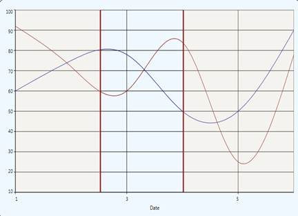

Essential Chart for WPF now supports axis range selection. This enables the user to select a particular range of a primary axis by using two cursors.
Adding an Axis Range Selection
To add axis range selction, set the EnableRangeSelection to True. The following code illustrates this.
|
[XAML]
<syncfusion:ChartArea Name="area" EnableRangeSelection="True" LineStroke="Maroon" SelectionStroke="LightPink" />
|
|
[C#] chart1.Areas[0].EnableRangeSelection = true; double start = chart1.Areas[0].StartRange; double end = chart1.Areas[0].EndRange; chart1.Areas[0].LineStroke = Brushes.Maroon; chart1.Areas[0].SelectionStroke = Brushes.LightPink; |
When the code runs, the following output displays.

Figure 193: Chart with Two Cursors to Select the Axis Range
Property Details
Table 137: Property Table
|
Name of Property |
Description |
Type of Property |
Value It Accepts |
Sub Properties |
|
EnableRangeSelection |
Used to set the range selection. |
Dependency |
Binary or True/False |
· StartValue · Type: double · EndValue · Type: double · LineStroke · Type: Brush · SelectionStroke · Type: Brush |